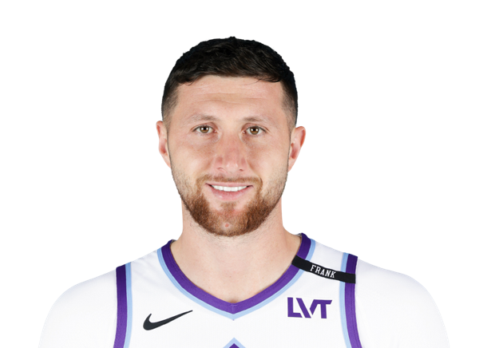

BASKETBALLKEEP
Dynasty · Redraft · Hardwood

C · PHX
Jusuf Nurkic
Keep #237
Board #230
Age 32
793 BK Value
Plus
- Helps in blocks. The rim protection is not empty.
- Helps field-goal %. Efficient enough that you are not punting FG.
- Helps on the glass. Boards show up even when the shot is quiet.
Minus
- Assists are light. Not a creator. Need dimes elsewhere.
- Free-throw % is a leak. Paint finishes that miss the line.
- Threes are thin. The shot is not a category you can count.
Boards
Where the boards put him
High 194 · low 241. Unranked boards are skipped.
| Board | Rank |
|---|---|
| Basketball Monster Cats | 194 |
| Basketball Reference ROS | 200 |
| Hashtag Basketball Dynasty | 202 |
| KeepTradeCut NBA | 202 |
| FantasyPros Dynasty ECR | 241 |
On the wire
All players · The Keep · The Board · BK News · Calculator